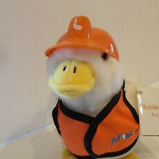

RedFox（2代目）🇲🇴🇭🇰
@FoxRed695449
RT @abeleung: 四名於香港生態界別工作的年輕人籌辦首屆「鳴就明鳥聲模仿大賽」。籌委最初曾擔心比賽沒人報名，未料吸引九十七名身懷絕技的市民參加，在社交媒體引發熱議。別人眼中的「無聊事」，認真做又能做到多認真？來看看這個最初由四個人的構思，變成既認真又富趣味的二百人「升…

鴨髀Aäpbei🦆🍗
@abeleung
四名於香港生態界別工作的年輕人籌辦首屆「鳴就明鳥聲模仿大賽」。籌委最初曾擔心比賽沒人報名，未料吸引九十七名身懷絕技的市民參加，在社交媒體引發熱議。別人眼中的「無聊事」，認真做又能做到多認真？來看看這個最初由四個人的構思，變成既認真又富趣味的二百人「升key雀」大合唱成果【明周文化】 https://t.co/9z9vw8cEXT